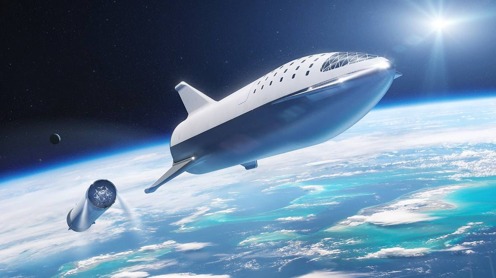

O futuro da exploração espacial
A humanidade vive um novo capítulo da corrida espacial. Agências e empresas privadas planejam missões de longo prazo para a Lua, Marte e além, buscando transformar a exploração em permanência.
A estação lunar Gateway, prevista para a próxima década, servirá como ponto de apoio para viagens interplanetárias. Ao mesmo tempo, sondas e telescópios continuam a investigar os confins do sistema solar e o espaço interestelar.
O futuro da exploração espacial não é apenas tecnológico — é também filosófico. Ao olhar para fora, estamos, na verdade, tentando entender quem somos, de onde viemos e até onde podemos chegar.
Voltar